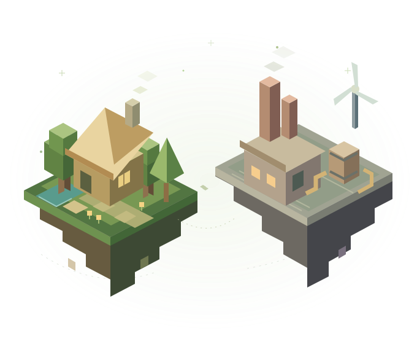

01
Checking server
THE FRESH START
Vanilla.
Just Minecraft. New terrain, first-night shelters, shared builds, and whatever happens along the way.
Explore vanillaSAINT JULES MINECRAFT · 2.0
Start with a little cabin. End up with a whole city.
Two ways to play, and plenty of room to make it yours.

CHOOSE YOUR ADVENTURE
Keep it classic, or go gloriously overboard.
These are separate servers, with separate worlds.
THE FRESH START
Just Minecraft. New terrain, first-night shelters, shared builds, and whatever happens along the way.
Explore vanillaTHE FAMILIAR UNIVERSE
Factories and cities. Magic and machinery. Space trips and sea monsters. Your existing pack, all still here.
Explore moddedWebsite 2.0 is a fresh front door—not a reset of the modded world or a new modpack version.
02 / THE MODDED SERVER
The same Saint Jules pack, with room for the way you like to play. No picking through JAR files. No starting over.
Lay out a town, connect factories, and make the machinery work for you.
Create · Mekanism · ProjectRed · Macaw'sFly out, explore deep caves, or take the next project all the way to space.
Ad Astra · Immersive Aircraft · Alex's CavesSpellcraft, sea creatures, bigger mobs, and reasons to bring a friend.
Ars Nouveau · Iron's Spellbooks · AquamiraeWeather, survival systems, nuclear projects, and a well-stocked kitchen.
Weather2 · Tough As Nails · Nuclear Science · Farmer's DelightInstall the matching pack, then choose Saint Jules in Multiplayer.
MODDED SERVER ADDRESSvoucher-wildlife.gl.joinmc.link
Checking public reachability. Status is not a guarantee of in-game performance.
01 / THE VANILLA SERVER
A separate, fresh survival world on modern Minecraft Java Edition. No Forge, no extra mods, and no changes to the modded server.
A fresh vanilla world, separate from modded. Use the address below with Minecraft Java 26.3.
shrimp-russ.tun.ply.ggUse Minecraft Java 26.3. Checking public reachability…
LESS SETUP. MORE PLAY.
Use the instructions for your server. The modded pack and vanilla client are separate installations.
Install Prism Launcher for your computer, then sign in with the Microsoft account that owns Minecraft Java.
Download the Saint Jules pack. In Prism, select Add Instance → Import and choose the .mrpack.
Launch the imported instance and choose Saint Jules in Multiplayer. Keep its mod list unchanged so it matches the server.
Use the official Minecraft Launcher or a separate vanilla Prism instance. This is Java Edition, not Bedrock.
Select Minecraft 26.3. Do not launch the Forge modpack for this server.
Use Multiplayer → Add Server and paste its separate address above. Both servers use approved player lists.
THE USEFUL STUFF
Start here if something doesn't quite click.
No. The vanilla server is separate. The current modded world and pack stay in place; website 2.0 does not reset them.
Both servers use approved player lists. Ask Jules to add your exact Java username to the server you want to join. Repeatedly reinstalling the pack won't fix an access-list message.
Let Prism finish its downloads and use the pack's Java 17 runtime. Close applications you aren't using before launching a large modpack. Don't delete random mods or increase memory beyond what your computer has available.
Status comes from an outside checker and can be delayed or unavailable. Check your edition, version, address, and approved-player access first. “Could not confirm” is not proof the server is down.
For the quickest local route, use 127.0.0.1:25565 for modded or 127.0.0.1:25566 for vanilla. These addresses only work on that Mac; everyone else uses the public addresses above.
These are Minecraft Java Edition servers. Bedrock, console, and mobile cross-play are not currently offered.
133 hosted downloads + 7 bundled files.
All 140 mod files shown.